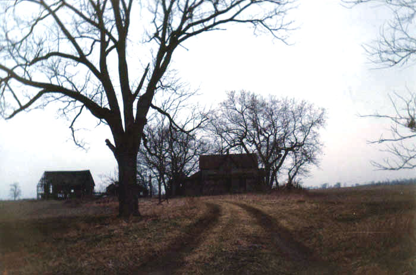

Danville Road Farmhouse

This thoroughly abandoned farmhouse stands on Danville Road in Madison County, south of Newport near Midway. Danville is sometimes called Newport-Bloomingburg Road.
My ex-girlfriend told me about this one, since it's near where she lives. It's not a big farmhouse like some I've been to, but it does have character. As you can tell, these photos were taken in the evening. Waking up at 5PM isn't good for getting clear daytime photos.
Beside the farmhouse stands one of those great Ohio abandoned barns. The roof is practically gone, and the floor is sinking in. There are still ladders going up to the loft, but I wasn't brave enough to go all the way up there. These old barns do seem to deteriorate slowly, though, and are usually a lot sturdier than they look.
In a little shed between the house and the barn we came across an old piece of New Holland farm equipment. I was recently informed that this thing is a hay baler.
Just outside one of the side doors is this octagonal concrete hole. The chamber it opens into is made of brick and full of filthy water--probably the well. Later on, when I was walking backwards through the field to get an outside picture of the place, I came about six inches from sticking my foot into another one of these things.

The farmhouse itself was wide open. Although it's been stripped of furnishings, there are still indications of what it once looked like: wooden trim along the walls, wallpaper, light fixtures. Lots of wasps' nests, too.
The kitchen seems to have been at the back of the house, with doors on either side. There are two rooms in front of it, as well as one on each side at the front. I assume the back room is the kitchen even though there's nothing left in it--no stove, no fridge, no sink. The place must have been abandoned for a while.
One of the few relics to be seen in this farmhouse--and one of the only indications of what the rooms were--is the fireplace, located just inside the front door. Makes you wonder when it was last used. Twenty years ago?
In spite of the place's obvious structural problems, I went up the narrow staircase to take a look at the second floor. There were only two bedrooms upstairs, one on each side of the staircase, both barren. Each one had a big window at the peak of the roof which showed the farm fields outside.
I can't help but be fascinated by this little abandoned farmhouse. It's weird to imagine the family that must have lived here. Did the parents and the kids sleep in these upstairs bedrooms, or were they both for the kids? Did they get up every morning for school and come down these stairs? Where did they set up their Christmas tree? Where did they eat dinner? Do you think they ever imagined that their house would end up like this?
We visited this house in late March of 2002; as far as I know it's still there. To find it, go south of London into Newport, then take Danville Road (aka Newport-Bloomingburg Road) south. Go about two miles and keep your eyes on the right side of the road.
Back
{kind=link}
{kind=link}
{kind=link}
{kind=link}
{kind=link}
{kind=link}
{kind=link}
{kind=link}
{kind=link}
{kind=link}